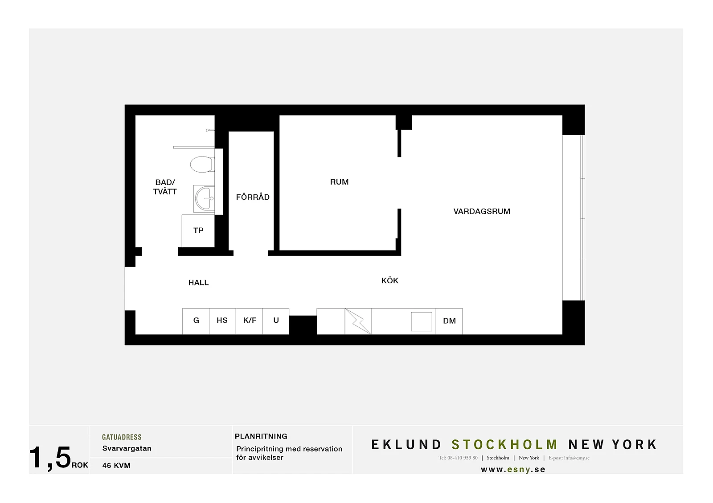
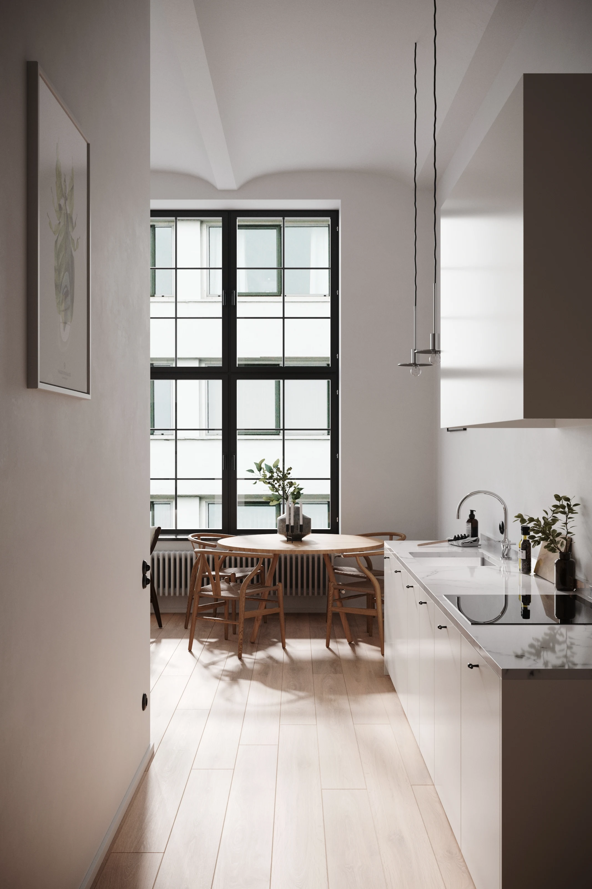
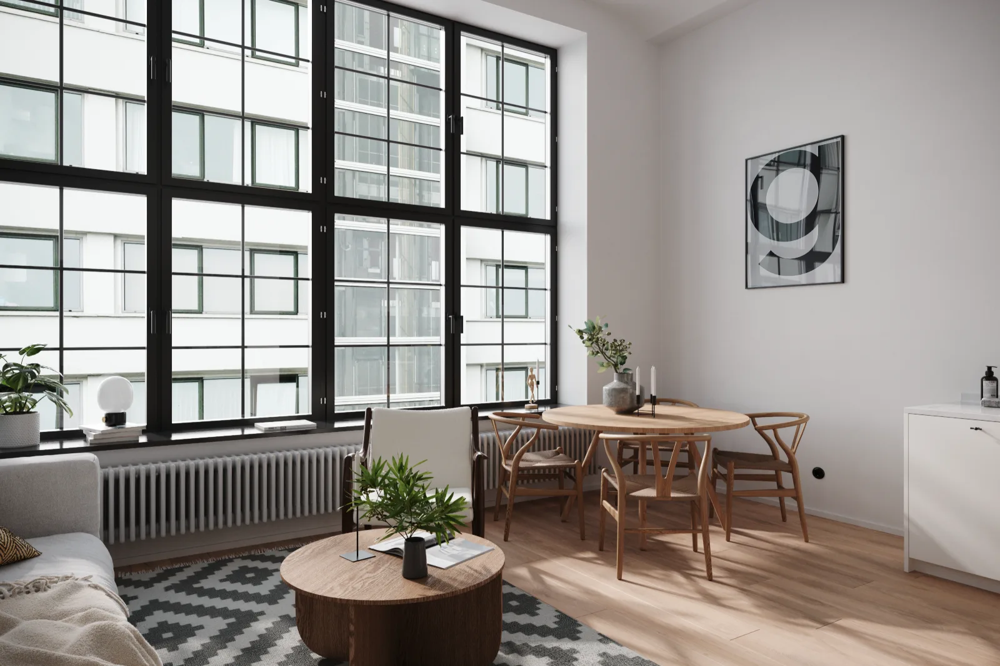
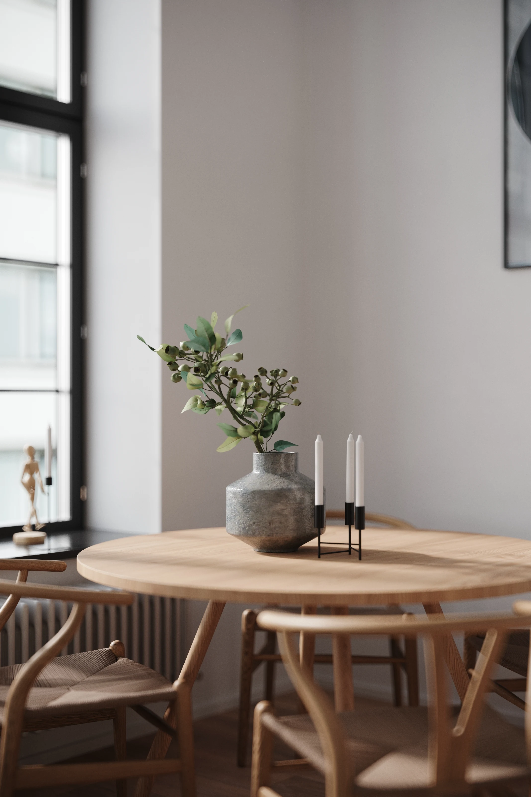
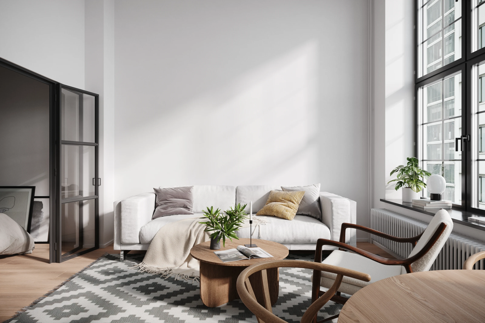
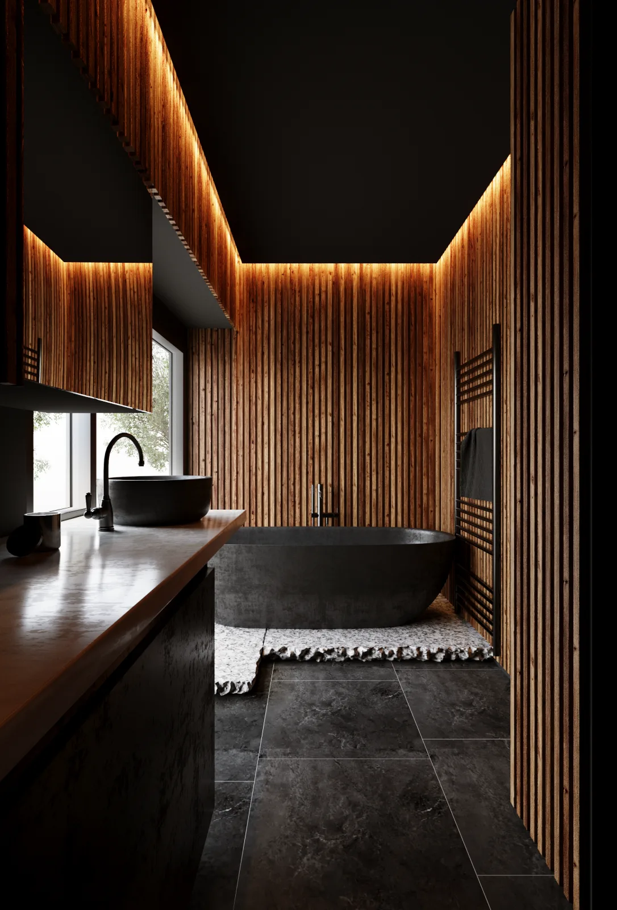

← 返回作品选集01 / Layout 02 / 厨房视角 
03 / 餐厅视角 04 / 餐厅斜视角 05 / 餐桌近景视角 06 / 沙发视角 07 / 项目作品总览
空间与 CGI
室内空间与氛围
从空间布局、材质到自然光表现，记录室内空间的设计与可视化练习。
项目类型空间与 CGI
个人职责空间建模 / 效果图
使用工具SketchUp / 3ds Max / Photoshop
项目背景
原作品集中的室内设计作品，展示空间建模、材质搭配与效果图表达。
我的工作
- 围绕空间功能构建室内方案模型。
- 调整材质、灯光及画面视角，表达空间氛围。
- 以效果图支持设计沟通与展示。
作品与过程
7 张图片 · 点击放大查看


原图效果



原图效果
原图效果

职责与署名
室内空间表现作品，展示空间、材质与光影的综合表达。